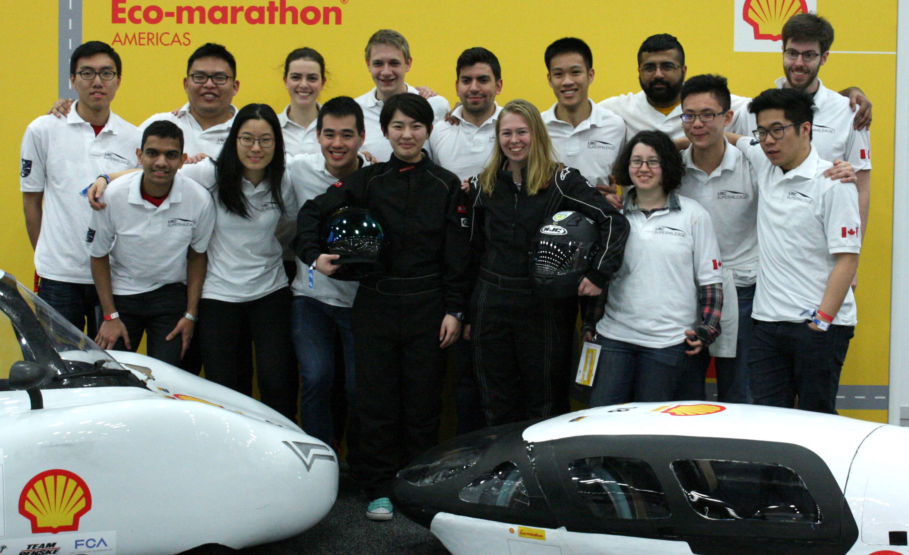

UBC Supermileage was founded in 2001 by UBC engineering students Rob Mahaffey and Brian Jung. The goal of the team was to develop a highly fuel-efficient car to compete in the SAE Supermileage competition while providing an opportunity for student engineers to apply classroom theories to real-world problems. The team started out small, with 6 students doing most of the organization, fundraising, design, fabrication, and assembly of the vehicle. The team’s small size compared to other UBC student teams did not prevent it from being successful at the competition, and in fact UBC Supermileage achieved a first-place position 4 years in a row.
In the 2006/2007 academic year, the team consisted mostly of new members after the core members graduated from UBC. This was a difficult year for the team as the new members had to rebuild the team’s sponsorship relationships, available resources, and technical knowledgebase due to the lack of turnover documentation from the now-graduated core members. The team overcame these challenges to obtain a respectable fourth-place position in the 2008 Supermileage competition.
After several years of success in the SAE Supermileage competition, the team decided to try something new and to compete in the Shell Ecomarathon in the Urban Concept division. This class of vehicle was intended to promote cars that were closer to typical road-legal vehicles, marking a significant change from the Prototype vehicles that competed in the SAE Supermileage competition. During this time, the team also grew significantly in size to approximately 60 members, with 14-18 students making up the core leadership of the team. The larger team allowed UBC Supermileage for the first time to send both an Urban and a Prototype-class vehicle to competition in a single year, which took place at the 2013 Shell Ecomarathon.
When returning from the 2013 Shell Ecomarathon, both the team’s vehicles were lost in a shipping accident. Almost every part of the vehicles was destroyed, and much of what was left was too damaged to be reused. While this setback could have caused the team to miss the Shell Ecomarathon for a year or more, the leadership of team captain Katelyn Currie ensured that both vehicles were rebuilt from scratch in time for the 2014 Shell Ecomarathon. UBC Supermileage continued to develop as a team, and in 2016 sent the Prototype vehicle to both the Shell Ecomarathon and SAE Supermileage competitions, where the team was recognized with the “best newcomer” award for its return to the latter competition. UBC Supermileage continues to compete in the two competitions with the goal of achieving first-place positions for both vehicles in both competitions.
TODO this is an image of the team
A key to good design is to “keep it simple silly!” Part of the challenge of the competition is not only to design components, but to optimize and create completely new and unique solutions to problems.
Engineers and students are responsible for educating the public on environmental-related issues that arise from technology. UBCST believes that through our project work we can reach out and promote awareness and educate the public on energy conservation and just plain saving gas! The team wants to continue to grow and build, and share its success with the community. We can be seen meeting with the public at many events.
Both are competitions to build the most energy-efficient vehicle possible. Click here for more competition info.
We are located in beautiful Vancouver, British Columbia, Canada. We are situated on the west coast of Canada, just north of Washington state. Click here for a mailing address.
Yes, a press release or more info may be obtained by emailing the team.
We keep our vehicle as spartan as possible, with only the bare essentials to keep the vehicle lightweight. Aerodynamics, rolling resistance, driving technique and engine performance are always being revisited and continuously improved.
Contact us for a press release or just to ask a few questions. We will be happy to answer your questions.
We are very excited about the Urban Concept class; it more closely resembles an “everyday” vehicle. We feel as though this is an excellent opportunity to continue with our goals, and apply what we have learned in the prototype class to a more practical vehicle. As a small team in 2009/2010, we did not have the bandwidth to attempt both projects, and the Urban Concept Car was an exciting, relevant opportunity for us to evolve the team. Since our decision to move to the Urban Concept Class, the team has grown significantly, showing that we weren’t the only ones excited about the project!
In the past year, we’ve had a lot of interest from new members , and we’re proud to announce that we now have the personal to enter both the Prototype and Urban Concept categories!
Every competition is governed by different rules and run on a different type of track. Since the Shell Eco-Marathon is a fairly newly revived competition in North America, our prototype had been designed for and entered primarily in the SAE Supermileage competition. The urban concept vehicle has been designed specifically for the Shell Eco-Marathon.
Teams in the Eco-Marathon have carte-blanc on engine design where the SAE Supermileage competition is much more heavily regulated with the use of a pre-determined Briggs and Stratton engine that you have to design from.
Supermileage is mostly dedicated to creating energy efficient vehicles, regardless of the energy source. In the long run, UBCST aims to work on implementing an alternate energy source on our urban concept vehicle. Until this transition, we will continue to work with the most commonly used fuel source: gasoline. While we are still using gas, it’s important for us to reduce it’s impact.